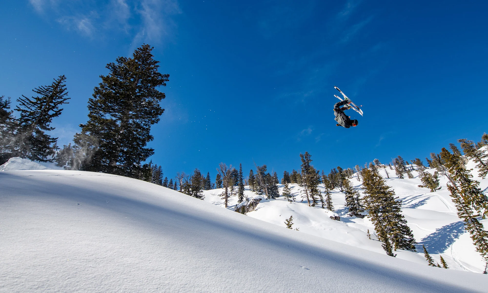

Top Tier Athletes
- Park & Pipe Specialists
These athletes turn icy slopes into playgrounds, utilizing precise geometry and massive airtime.
- Alex Hall: A 2022 Olympic Gold Medalist known for "unreal" rotations. He often lands tricks that seem physically impossible, including his signature 2160.
- Eileen Gu: A global icon who dominates Big Air, Slopestyle, and Halfpipe. She is the first action sports athlete to win three medals at a single Olympics.
- Nick Goepper: The veteran of the US team. Nick is a three-time Olympic medalist and multi-time X-Games champion known for his technical rail mastery.
- Freeride World Tour Icons
Big mountain skiers who treat 50-degree cliffs like a Sunday stroll.
- Markus Eder: Perhaps the most complete skier in the world. He transitioned from park skiing to winning the Freeride World Tour, famous for "The Ultimate Run."
- Hedvig Wessel: A Norwegian powerhouse who brings a background in moguls to the steepest faces in the Alps. She is known for taking the most aggressive lines on the tour.
The Action

Global Snowfall Trends
Data is at the heart of finding the perfect line. Explore the historical snowfall stats that these athletes rely on for their seasons.